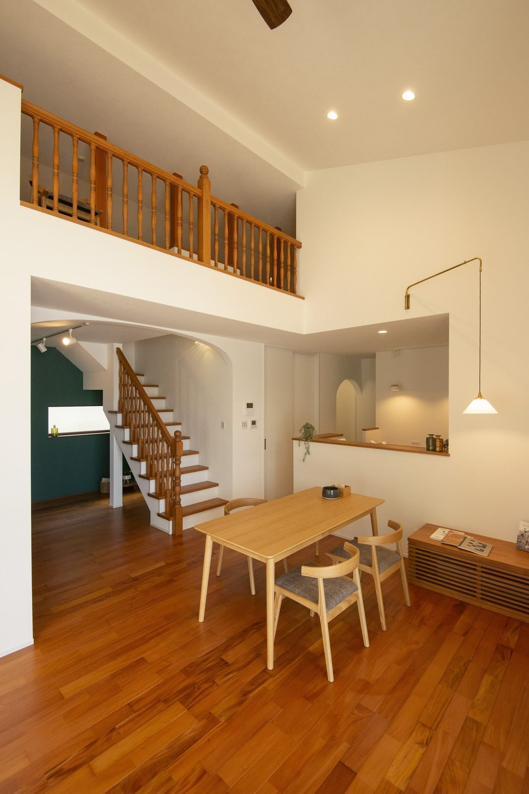
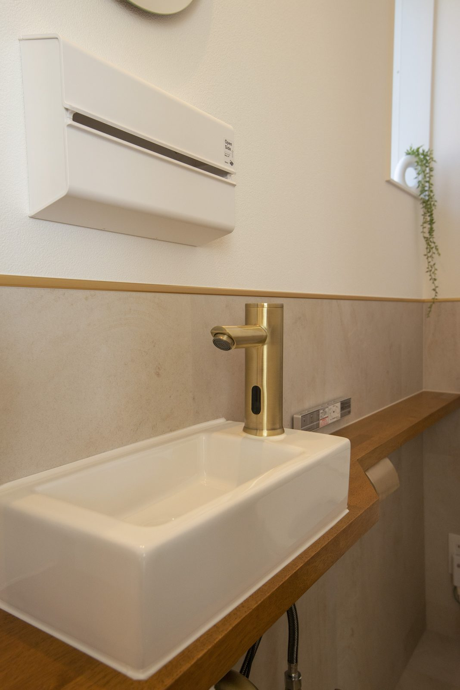
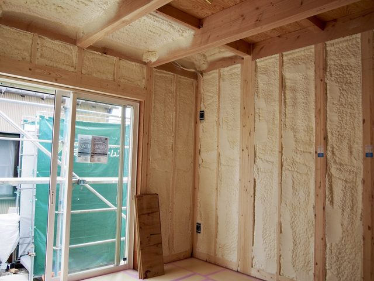
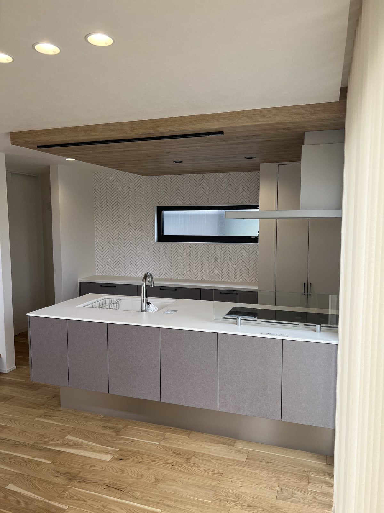

打ち合わせで「換気は第一種ですか」と聞かれることが増えました。
私が2023年に書いた記事を、いまの仕様に合わせて書き直しました。
第一種と第三種の違いと、シバサンホームが第三種を標準にしている理由をお伝えします。

換気は、家全体の空気の流れで考えます。
家の換気は、24時間動かす決まり
2003年の建築基準法の改正で、新しく建てる住宅には24時間換気の設備が義務になりました。
建材や家具から出る化学物質で体調をくずす「シックハウス」を防ぐためです。
求められているのは、1時間に家の空気の半分が入れ替わる換気です。
この換気のやり方に、第一種・第二種・第三種の3つがあります。
3つの違いは、どこに機械を使うか
| 空気を入れる | 空気を出す | |
|---|---|---|
| 第一種 | 機械 | 機械 |
| 第二種 | 機械 | 給気口やすき間から |
| 第三種 | 給気口から | 機械 |
家の中の湿った空気が壁の中へ押し出されやすいので、住宅ではほとんど使いません。
住宅で選ぶのは、第一種か第三種のどちらかです。
第一種換気の利点と注意点
第一種は、空気を入れるのも出すのもファンで行います。
住宅では、出ていく空気の温度を入ってくる空気に移す「熱交換型」がほとんどです。
- 冬の冷たい外気を、室温に近づけて入れる
給気口のまわりが冷えにくくなります - 入ってくる空気をフィルターに通す
花粉やほこりを減らせます
注意する点もあります。
- 本体とダクトの費用が高い
ファンが2つ要り、設置する場所も取ります - フィルターの掃除が欠かせない
目詰まりすると、換気の量が落ちます - 気密が低いと、効果が出にくい
すき間から入る空気は、熱交換を通りません
第三種換気の利点と注意点
第三種は、ファンで家の中の空気を外へ出し、そのぶん各部屋の給気口から外の空気が入ります。
多くの住宅で使われている方式です。
- しくみが簡単で、費用を抑えられる
本体の費用も電気代も、第一種より少なく済みます - 家の中の湿った空気が、壁の中へ入りにくい
家の中が外より少し低い気圧になるためです
こちらも、注意する点があります。
- 外の空気がそのまま入る
冬は給気口のまわりが冷えます - 気密が低いと、空気の流れが計画どおりにならない
給気口ではなく、すき間から空気が入ります
どちらの方式も、家のすき間が少ないことが前提です。
すき間の多い家では、第一種でも第三種でも空気は思ったとおりに流れません。
シバサンホームが、第3種ダクト換気を標準にしている理由
シバサンホームの標準は、第3種ダクト換気の「ルフロ」（マーベックス）です。
天井裏に置いた本体1台から各部屋へダクトをのばし、家中の空気をまとめて外へ出します。

ダクト換気は、こうした場所からも空気を引いて外へ出します。
理由は3つあります。
- 壁の中の結露を防ぐ
家の中が外より少し低い気圧になり、湿った空気が壁の中へ入りにくくなります - 手入れが少ない
本体は1台で、手入れは年1回が目安です（メーカーの案内） - すき間が少ないので、計画どおりに流れる
気密はC値0.2〜0.5（実測）です
冬に給気口のまわりが冷えるのは本当です。
そのぶん、断熱等級6の断熱で家全体の室温を保つ考え方です。
第一種がよくないという話ではありません。
花粉がつらい方には、フィルターを通して空気を入れる第一種の利点は大きいです。
ご希望があれば、第一種にした場合の費用の差もお出しします。

性能と標準仕様を見る断熱・気密・換気の仕様を、数字のまま載せています。
キッチンの換気扇は、24時間換気とは別

24時間換気とは別に動きます。
レンジフードは、料理のときだけ強く空気を出します。
第一種でも第三種でも、これは変わりません。
気密の高い家では、レンジフードを回すとそのぶん給気口から空気が入ってきます。
よくある質問
冬に寒いので、24時間換気を止めてもいいですか？
止めないでください。
換気を止めると、料理やお風呂、人の呼吸で出た湿気が家の中にたまり、窓や壁の結露の原因になります。
家具や建材から出る化学物質も外へ出ていきません。
第一種換気と第三種換気では、電気代はどちらが高いですか？
ファンの数で比べると、給気と排気の両方にファンを使う第一種のほうが多くなります。
一方で、熱交換型の第一種は外の空気を室温に近づけて入れるので、冷暖房の負担は軽くなります。
どちらが得かは、家の断熱と気密、住む地域で変わります。
第三種換気の手入れは、何をすればいいですか？
各部屋の給気口のフィルターに、ほこりがたまったら掃除をします。
シバサンホームが標準にしている第3種ダクト換気「ルフロ」は、本体の手入れが年1回を目安としています。
まとめ
- 新築の住宅は、24時間換気が義務です
- 第一種は給気も排気も機械、第三種は排気だけ機械です
- 第一種は室温に近い空気を入れられ、費用と手入れが多くなります
- 第三種は費用と手入れが少なく、冬は給気口のまわりが冷えます
- どちらも、家のすき間が少ないことが前提です
- シバサンホームの標準は、第3種ダクト換気「ルフロ」とC値0.2〜0.5（実測）です

奈良の工務店シバサンホームで、
土地さがし・資金計画・打合せの窓口をしています。
モットーはスピード・誠実さ・楽しさ。